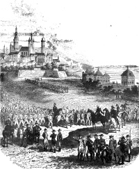

Sous la Convention, en 1792, les armées coalisées austro-prussiennes envahissent la France. L'invasion est stoppée le 20 septembre à Valmy. L'armée du général Custine repousse l'ennemi et entre dans Mayence le 21 octobre 1792. La ville, point stratégique entre le Rhin et le Main, devient une base importante.
En mars 1793, Custine pousse vers Francfort, est battu et doit se replier. Le 31 mars, les Prussiens assiègent Mayence avec près de 80 000 hommes face à une garnison d'environ 22 000 soldats. Le siège dure plus de trois mois. Mayence capitule le 23 juillet 1793.
Durant ce siège, face à la pénurie de numéraire, un représentant de la Convention ordonne l'émission de monnaies de nécessité (monnaies obsidionales). Ces pièces portent la légende « MONOYE DE SIEGE DE MAYENCE » et le millésime 1793 / L'AN 2E. On distingue principalement trois valeurs : le 5 sols, le 2 sols et le 1 sol.
Ces monnaies de siège constituent aujourd'hui des témoins rares et recherchés de la numismatique révolutionnaire. Elles illustrent la capacité d'adaptation monétaire en temps de guerre.
Sources : infonumis.info · catalogues Gadoury
Les monnaies du siège de Mayence
'" />5 Sols
Date : 1793 ; Atelier : Mayence ; 31.5 mm ; 21.85 g
Avers : REPUBLIQUE - FRANÇAISE / 1793 L'AN 2E. ; faisceau de licteur avec une pique surmontée d'un bonnet phrygien entre deux branches de chêne.
Revers : MONOYE DE SIEGE DE MAYENCE ; *5* / SOLS / * en trois lignes dans le champ.
Référence : G.67
2 Sols
Date : 1793 ; Atelier : Mayence ; 25 mm ; 6.43 g
Avers : REPUBLIQUE - FRANÇAISE / 1793 L'AN 2E ; faisceau de licteur avec une pique surmontée d'un bonnet phrygien entre deux branches de chêne.
Revers : MONOYE DE SIEGE DE MAYENCE ; *2* / SOLS / * en trois lignes dans le champ.
Référence : G.66
1 Sol
Date : 1793 ; Atelier : Mayence ; 21 mm ; 2.82g ; Degré de rareté : R1
Avers : REPUBLIQUE - FRANÇAISE / 1793 L'AN 2E ; faisceau de licteur dont la hampe est surmontée d'un bonnet phrygien, le tout dans une couronne de chêne.
Revers : MONOYE DE SIEGE DE MAYENCE ; 1 SOL écrit au centre sur 2 lignes, 1 entre deux roses, et une rose sous SOL.
Référence : G.65